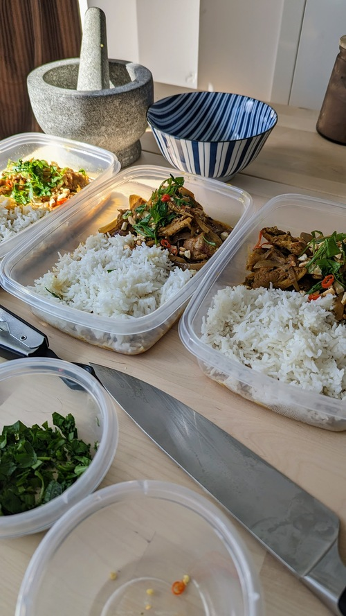

Yellow Curry

Serves: 3
Prep time: 1hr
Author: Matthieu Court
Ingredients
700g - Chicken Thighs (boneless, skinless)
Curry: Ginger, Garlic, Cumin, Coriander, Paprika, Cloves, Turmeric, Cardamom Pods, Water, Vinegar
Dessicated Coconut
Raw Cashews (pan toasted)
3 - small Red Chilis
500mL - Coconut Milk
3/4 cup - Chicken Stock
Back to Home